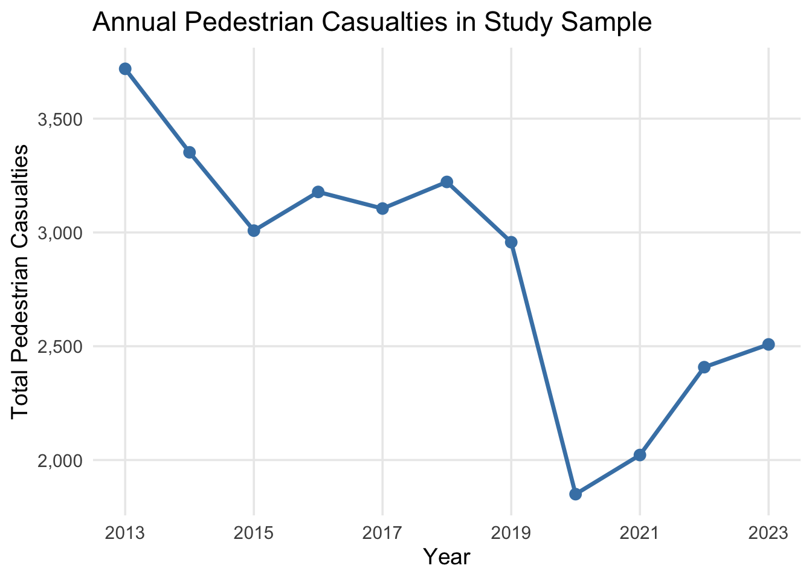
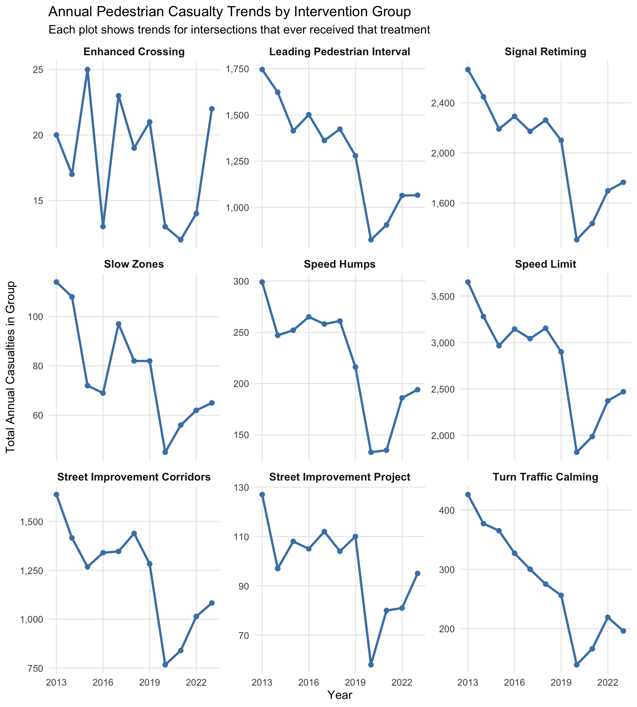
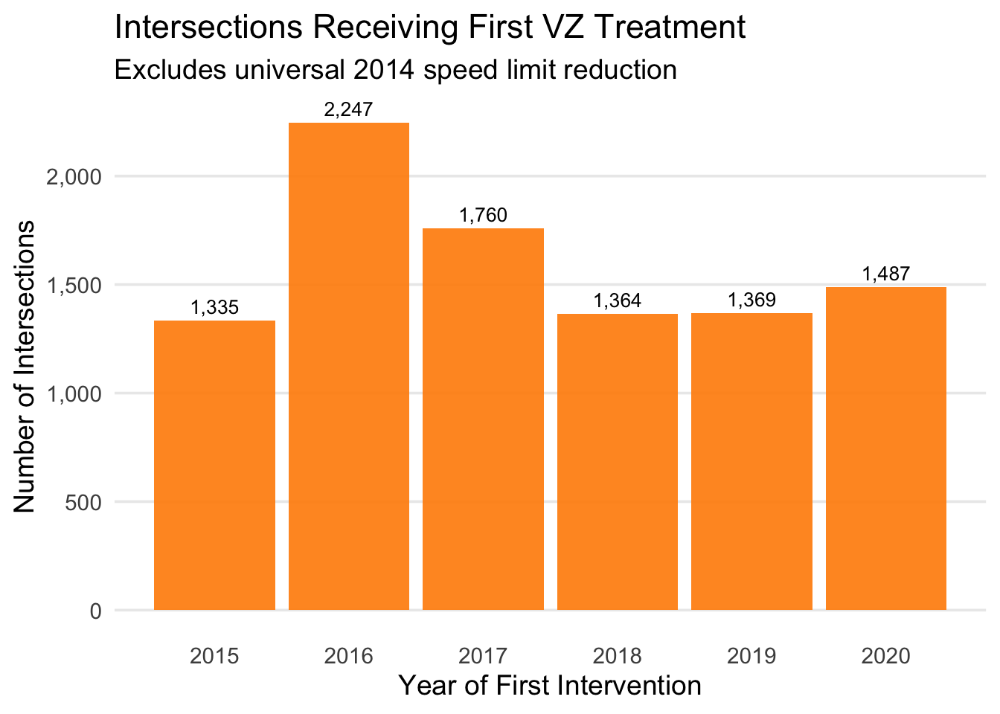
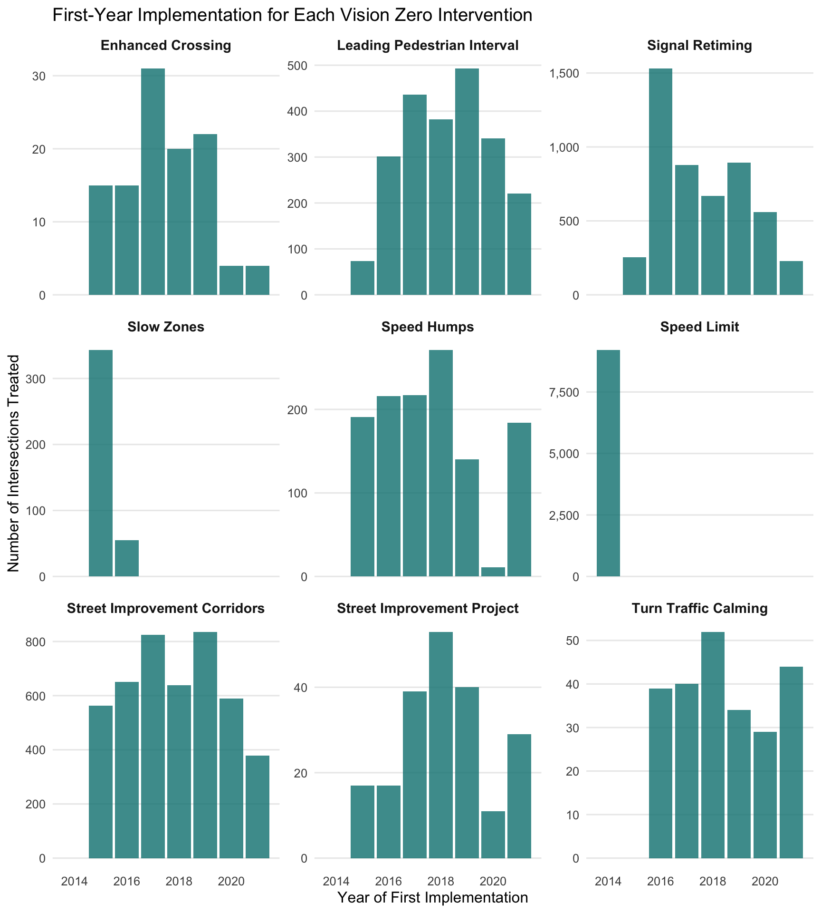
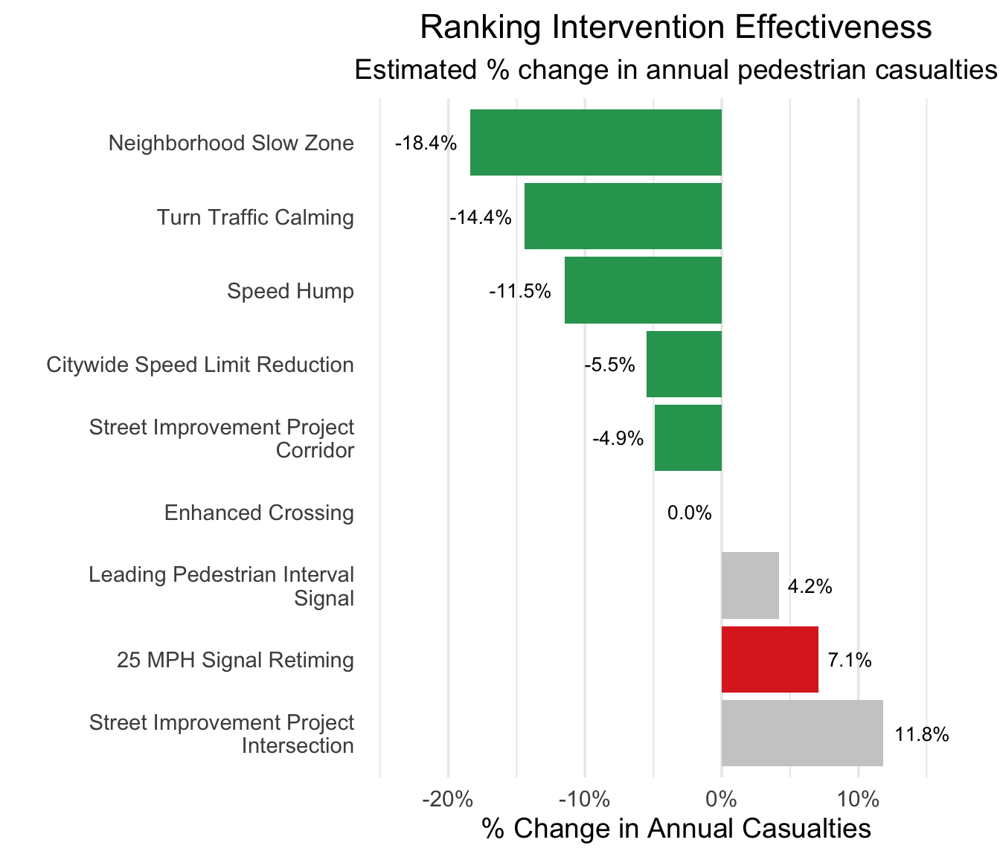

| Descriptions of Assessed Vision Zero Interventions | ||
|---|---|---|
| Intervention | Description | Components / Examples |
| Citywide Speed Limit Reduction | Default speed limit change from 30 MPH to 25 MPH. | Streets may be signed or unsigned. |
| Enhanced Crossing | A marked high-visibility crosswalk on calm streets with low vehicle volumes, high pedestrian traffic, and no traffic signal or stop sign. | At minimum, include high visibility crosswalk markings, daylighting on all approaches, Americans with Disabilities Act compliant pedestrian ramps, and pedestrian warning signage. |
| Leading Pedestrian Interval Signal | Signals that show a pedestrian walk sign before showing a green light to vehicle traffic in the same direction, giving pedestrians a head start to cross the street before car traffic. | NA |
| Neighborhood Slow Zone | Neighborhood areas, selected based on crashes, presence of schools, and other factors, in which the speed limit has been reduced to 20 mph. | Include road markings and signs indicating entrance to a slow zone, along with greater concentration of other interventions. |
| SIP Corridors | Safety-oriented engineering improvements that use multiple treatments in a street corridor. | Examples: large range of subtypes, including markings, vertical elements, signage and regulatory changes, signal changes, concrete, and landscaping. |
| SIP Intersection | Safety-oriented engineering improvements that use multiple treatments in a single intersection. | Same as above, but within intersections rather than along street corridors. |
| Speed Hump | A raised area of a roadway designed to reduce vehicle speeds. | NA |
| Turn Traffic Calming | A traffic calming measure that guides drivers to turn more safely and increases pedestrian visibility. | Examples: hardened centerline, slow turn wedge, bike island channelization, median extension. |
| 25 MPH Signal Retiming | A corridor where the signal progression has been changed to match the 25 MPH speed limit. | NA |
Evaluating the Impact of Traffic Safety Interventions on Pedestrian Casualties (2013-2023)
Vision Zero in New York City Motor vehicle crashes are a leading cause of death and injury in New York City (NYC). In 2014, the city adopted the Vision Zero (VZ) framework, a comprehensive strategy to eliminate all traffic-related fatalities. The program uses a multi-faceted approach, including infrastructure redesign, lower speed limits, and public awareness campaigns. This analysis evaluates the impact of nine distinct street-level interventions on pedestrian casualties (deaths and injuries combined). The study uses a robust statistical model to analyze data from 9,562 intersections between 2013 and 2023, isolating the effect of each intervention while controlling for other factors like traffic volume and population density.
Key Findings
Speed is Key
Interventions that physically slow traffic, like Neighborhood Slow Zones (-18%), were most effective.
Unintended Harm
Signal Retiming to improve vehicle flow was linked to a 7% increase in casualties.
Mixed Results
Other common treatments showed no significant citywide impact on pedestrian safety.
What Are the Vision Zero Interventions?
The analysis focuses on nine key physical and regulatory changes made to NYC streets. The table below provides a brief description of each intervention.
Citywide Pedestrian Casualty Trends
To understand the citywide context, we first examined the overall trend in pedestrian casualties across all 9,562 intersections in our study.
The number of pedestrian casualties showed a general downward trend over the study period, with a sharp, anomalous drop in 2020. This dip corresponds to the major changes in traffic patterns and pedestrian activity during the first year of the COVID-19 pandemic.
While casualties rebounded after 2020, they remained below pre-pandemic levels, suggesting that Vision Zero initiatives may be contributing to a sustained, long-term improvement in pedestrian safety.

The following charts break this down further. Each plot shows the casualty trend for intersections that ever received a particular type of intervention. This helps visualize trends within specific treatment groups and reveals that the overall citywide pattern is largely consistent across different intervention types.

Vision Zero Implementation Timeline
The Vision Zero program was rolled out in a staggered fashion, with different intersections receiving treatments in different years. Our study design leverages this staggered implementation to better isolate the causal impact of each intervention.
Nearly 25% of intersections in our data received their first Vision Zero intervention in 2016, with 2,237 intersections treated during that year.
No intersection in our data received its first Vision Zero treatment in 2021, suggesting that the program’s implementation to new intersections might have been limited in the aftermath of the COVID-19 pandemic.

Intervention-Specific Rollout
To see how each specific safety measure was rolled out over time, the charts below break down the implementation timeline for each of the nine interventions studied. Each chart shows the number of intersections that received that particular treatment for the first time in a given year. Notice how some interventions, like Neighborhood Slow Zones, were implemented heavily towards the beginning of the program’s roll-out, while others, like Street Improvement Corridors, were deployed throughout the observation period.
While the program’s expansion to new intersections paused in 2021, the work itself did not. The charts below reveal a strategic shift: instead of expanding the program’s footprint, the city began deepening the investment by layering additional safety measures onto intersections that were already part of the program.
For instance, a significant number of intersections received new Turn Traffic Calming or Speed Humps for the first time in 2021, even though those locations had already received a different type of treatment in a prior year.

Impact of VZ Interventions on Pedestrian Safety
We used a negative binomial regression model to estimate the effect of each intervention on the annual count of pedestrian casualties. The results are presented as an Incidence Rate Ratio (IRR). An IRR below 1.0 suggests the intervention reduced casualties, while an IRR above 1.0 suggests it increased them.
The table below summarizes these findings. Rows are colored based on the result: green for a statistically significant reduction, red for a significant increase, and grey for no significant effect.
| Impact of VZ Interventions on Pedestrian Casualties | |||||
|---|---|---|---|---|---|
| Intervention | IRR | 95% CI for IRR | p-value | % Change | 95% CI for % Change |
| Street Improvement Project Intersection | 1.118 | 0.958, 1.305 | 0.156 | 11.80% | [-4.2%, 30.5%] |
| 25 MPH Signal Retiming | 1.071 | 1.026, 1.118 | 0.002 | 7.10% | [2.6%, 11.8%] |
| Leading Pedestrian Interval Signal | 1.042 | 0.992, 1.095 | 0.102 | 4.20% | [-0.8%, 9.5%] |
| Enhanced Crossing | 1.000 | 0.765, 1.308 | 0.999 | 0.00% | [-23.5%, 30.8%] |
| Street Improvement Project Corridor | 0.951 | 0.909, 0.995 | 0.029 | −4.90% | [-9.1%, -0.5%] |
| Citywide Speed Limit Reduction | 0.945 | 0.900, 0.992 | 0.021 | −5.50% | [-10.0%, -0.8%] |
| Speed Hump | 0.885 | 0.815, 0.962 | 0.004 | −11.50% | [-18.5%, -3.8%] |
| Turn Traffic Calming | 0.856 | 0.779, 0.941 | 0.001 | −14.40% | [-22.1%, -5.9%] |
| Neighborhood Slow Zone | 0.816 | 0.691, 0.964 | 0.017 | −18.40% | [-30.9%, -3.6%] |
Ranking Intervention Effectiveness
The bar chart visualizes the estimated percent change in pedestrian casualties for each intervention, providing an at-a-glance summary of which strategies were most effective.
What Works Best? The most successful interventions manage vehicle speed through physical design or regulation.
Neighborhood Slow Zones (-18.4%)
Turn Traffic Calming (-14.4%)
Speed Humps (-11.5%)
What Doesn’t Work (or Makes Things Worse)?
25 MPH Signal Retiming (+7.1%) was the only intervention associated with a harmful effect.
Leading Pedestrian Intervals, Enhanced Crossings, and SIP Intersections had no statistically significant effect.

Conclusion & Policy Implications
Our analysis confirms that Vision Zero has had a tangible, positive impact on pedestrian safety, but not all interventions contribute equally. The findings provide a clear mandate for future transportation policy:
Prioritize Speed Management: The most effective way to protect pedestrians is to control vehicle speed. Future investments should be heavily focused on expanding infrastructure like Neighborhood Slow Zones, Turn Traffic Calming, and Speed Humps.
Re-evaluate Signal Retiming: The finding that signal retiming to favor vehicle flow is associated with an increase in pedestrian casualties is alarming. Transportation agencies must carefully review this practice and consider pairing it with other proven safety measures.
Focus on Systemic, Not Spot, Treatments: Redesigning an entire street segment (SIP Corridors) was effective, while implementing similar projects at a single intersection was not. This suggests that creating a consistently safe environment along an entire corridor is more impactful than isolated, spot-based fixes.
Ultimately, this research shows that building a safe transportation system and an efficient one are not conflicting goals. Investments in traffic calming are a core component of an efficient network that is safer and more predictable for all. ```